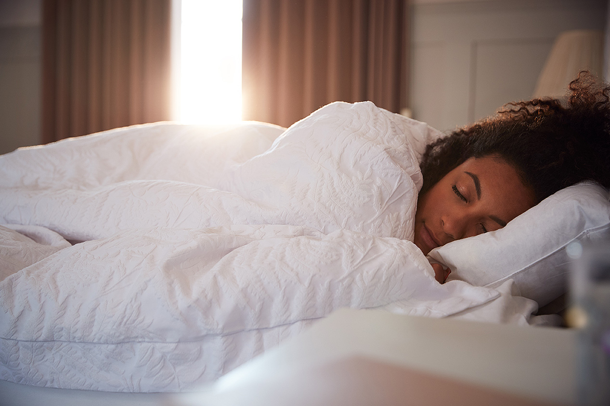
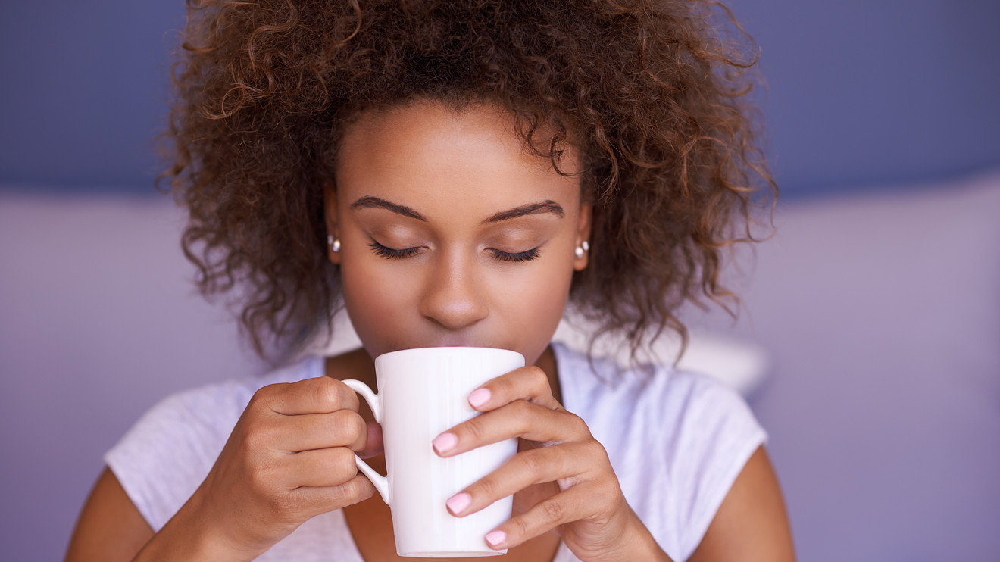
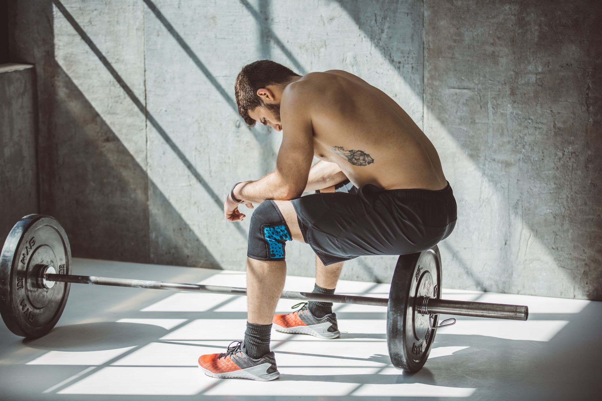

Getting a restful night of sleep everyday is fundamental in order to live a long happy life. “If you don’t sleep, you undermine your body.”says W. Christopher Winter, MD, the president of Charlottesville Neurology and Sleep Medicine and the author of “The Sleep Solution: Why Your Sleep Is Broken and How to Fix It.” Although exercising is crucial, it is important to make sure you eat well, drink well, and get enough sleep.
When you sleep, your body uses this time to recover, save energy, and allow your muscles to grow and repair. If you don’t sleep, you will not see results or benefits from your exercise. Growth hormones are generated throughout your body when you have good quality sleep. These hormones help your body repair your tired muscles and are vital for all athletes’ recuperation. Exercising can help you sleep better and there is scientific evidence backing up this claim. There has been a study conducted on people who have voluntarily announced they do not get more than 6.5 hours of sleep per night. These individual’s finished moderate intensity workouts 2/3 times per week for six weeks. At the end of this study, they concluded that they get an extra of an hour and fifteen minutes of sleep each night.
Adenosine is the chemical that makes you fall asleep. This is what caffeine avoids to keep you awake. When you exercise, additional adenosine is released into your brain. This decreases the amount of time it takes for you to fall sleep and allows you to feel better overall. Exercising right before bed may be affecting your ability to fall asleep although that isn’t always the case for others.
It is important to get enough sleep since without it, your mind and body will not function at it’s full potential.
It isn’t easy to start your exercise journey, but if it were, everybody would be doing it. I promise you, this will be one of the best decisions you will ever make and your future self will thank you.
Return to the Top of the page.